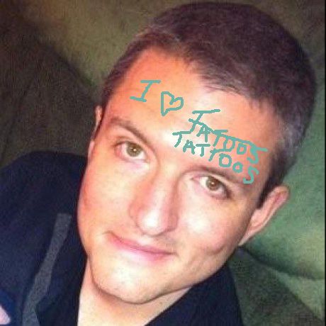

Jason Griffin: Student, Traveler, Exaggerator

- Although he has never had a sip, Jason is a huge coffee enthusiast with 17 coffee makers, five grinders, and even roasts his own beans at home.
- He doesn't commonly refer to himself in the third person but it seems appropriate here
- Another passion is sporting clays/general marksmanship.
- He has lived in Amsterdam, Oakland, Fremont (silicon valley), a half year in England, and four months in Prague.
- Costa Rica is his favorite place to unwind and relax. Travel is a passion but true travel is often stressful,
so having a place that is truly a vacation spot is a luxury he is lucky enough to have.
- Though tall for an American he is only slightly above average for a Dutch man at 6' 5".
- Despite initial appearances to the contrary he is a tattoo enthusiast and working on a 2/3rds body suit. True or Lie? @nerdist will give you "POINTS!" if you said True!
- At 39 he feels he has started to earn his grey hair but he actually went grey at 16 years old.
- He hopes to spend the rest of his life in New Mexico, there is nowhere else he would rather live.